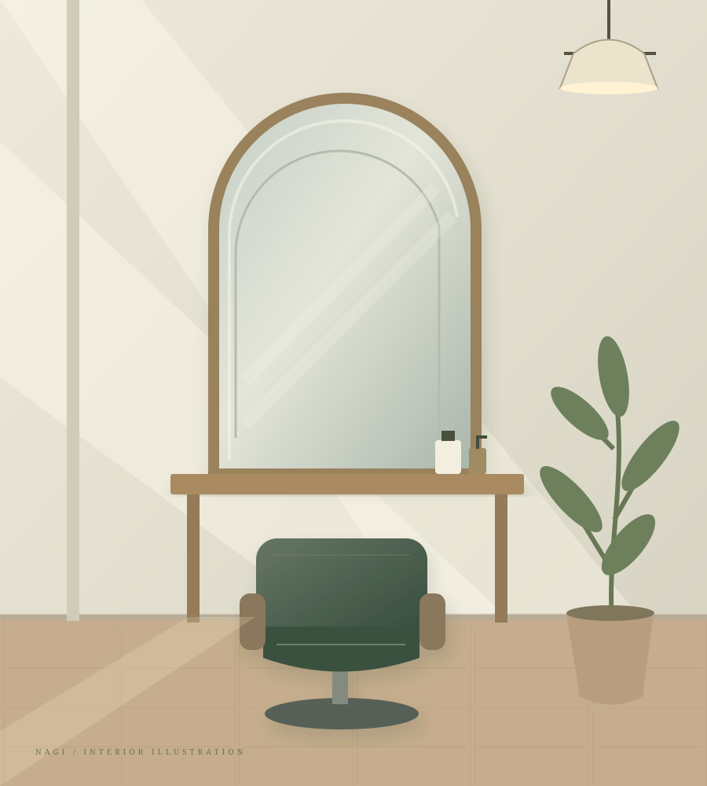
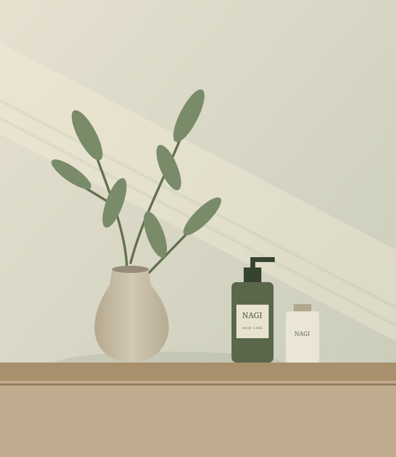

Cut カット
骨格と髪の流れを見ながら、自然に決まるシルエットへ。
A LITTLE CHANGE, A BETTER DAY.
髪が整うと、気持ちも少し軽くなる。
いつもの毎日が好きになる、
そんなヘアスタイルを、一緒に。

A PLACE TO FEEL LIKE YOURSELF.01 — OUR CONCEPT
忙しい日々のなかで、
ほっと息をつける場所があったら。
NAGIが大切にしているのは、髪のことだけでなく、
その先にある、あなたの暮らし。
髪質や好きな服、いつものスタイリングまで、
ゆっくりお話を聞きながら、似合う形を見つけます。
がんばりすぎず、自然体で。
明日のあなたに、ちょうどいいヘアを。

Slow down. Breathe out.03 — OUR SALON
木のぬくもりと、やわらかな光。
気負わず過ごせる小さなヘアサロンです。
掲載の店舗・所在地・営業時間はすべてサンプルです。
LET’S FIND YOUR NEXT LOOK.
髪のお悩みも、なりたいイメージも。
まずは、気軽にお話しください。
サンプルサイトのため、実際のご予約は受け付けていません。